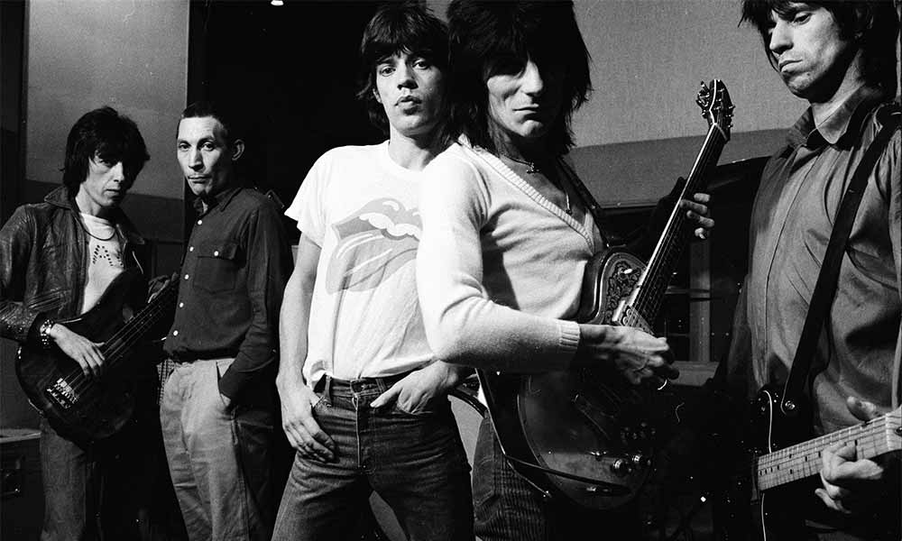
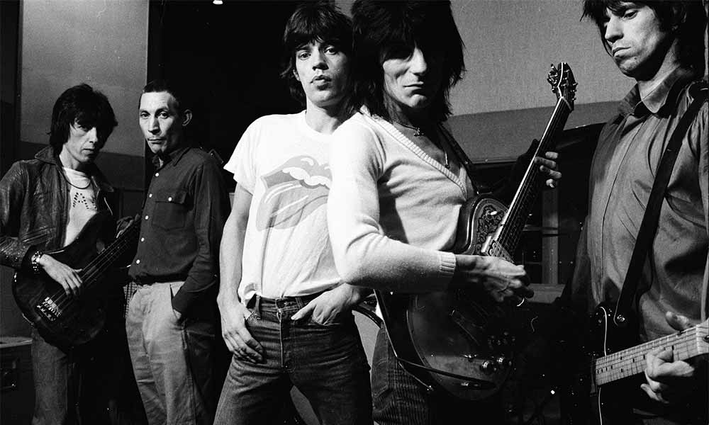

"The Rolling Stones é uma banda de rock britânica formada em Londres no ano de 1962, considerada um dos maiores, mais antigos e mais bem sucedidos grupos musicais de todos os tempos. Ao lado dos Beatles, são considerados a banda mais importante da chamada Invasão Britânica ocorrida nos anos 1960. A banda e seus membros ocuparam posição de destaque nas mudanças musicais e comportamentais dos anos 1960 e são frequentemente relacionados com a contracultura, rebeldia e juventude da época. Os Rolling Stones são um dos grupos musicais mais bem sucedidos da história e venderam mais de 250 milhões de álbuns no mundo inteiro.[1] Até o ano de 2007, quatro das cinco turnês musicais de maior lucro e bilheteria de todos os tempos eram dos Stones. A turnê mais lucrativa da banda é "A Bigger Bang Tour", que durou de 2005 a 2007 e arrecadou o incrível valor de $ 558 255 524 dólares. Durante esta turnê, a banda realizou um concerto gratuito nas areias da praia de Copacabana, no dia 18 de fevereiro de 2006 na cidade do Rio de Janeiro. Mais de 2 milhões de pessoas compareceram ao concerto, que está listado no Livro dos Recordes como o concerto gratuito com maior público realizado por uma única banda, de sempre. História: 1962-1969: Tudo começou em 1960, quando os dois amigos de infância, Mick e Keith, se reencontraram em um trem na estação de Dartford, Inglaterra,[2] e descobriram um interesse em comum por rock and roll. Foram convidados pelo guitarrista Brian Jones em 1962 a montar a definitiva banda de R&B branca, que se chamaria The Rolling Stones, inspirado no nome de uma canção de Muddy Waters, Rollin' Stone, cujo nome foi utilizado oficialmente, pela primeira vez, em sua apresentação no Marquee Club de Londres em 12 de julho de 1962.[3] O pianista Ian Stewart, amigo de Brian, seria o co-fundador da banda, mas porque sua imagem pessoal não tinha o devido sex-appeal, ele seria rebaixado a gerente de palco, com direito a gravar com a banda mas não de posar como membro. Bill Wyman, que embora já vivesse da noite há muito mais tempo que os demais, seria acrescentado à banda por um motivo fútil: possuía mais de um amplificador. Em janeiro de 1963, Charlie Watts assumiria definitivamente a bateria. A boa repercussão nas apresentações ao vivo somadas à habilidade promocional de seu empresário, levou a banda a um contrato com a Decca Records (então a piada do ano por ter recusado um contrato com os Beatles). Seu empresário promove a banda com uma imagem de rebeldes e cria a pergunta: Você deixaria sua filha se casar com um Rolling Stone?. Os primeiros singles, um cover de uma canção de Chuck Berry e Muddy Waters de cada lado, Come On/I Want To Be Loved, e uma gravação para uma composição da dupla John Lennon e Paul McCartney, I Wanna Be Your Man, foram bem aceitos. O primeiro álbum, chamado simplesmente The Rolling Stones, saiu em abril de 1964, contendo apenas uma composição de Jagger e Richards. Apenas com Tell Me (You're Coming Back), lançado em junho de 1964, é que uma composição da dupla seria lançada como lado A de um compacto. A partir daí, pouco a pouco o material próprio começou a ser valorizado, tendo em Out Of Our Heads, de 1965, o primeiro de uma série de discos basicamente de composições da dupla Jagger-Richards. É nesse ano que a banda lança seu maior hit em todos os tempos, (I Can't Get No) Satisfaction. Com o álbum Aftermath, de 1966, a banda começaria uma fase de músicas mais longas e de arranjos mais elaborados. O flerte com o rock psicodélico e experimental teria seu ápice em Their Satanic Majesties Request, de 1967. Apesar do apuro técnico, Their Satanic... é considerada uma obra menor pelos próprios Stones, e as suas faixas não são habitualmente tocadas em público. Palavras de Jagger: " (...) estávamos apenas a tomar demasiadas drogas (...) a pensar que qualquer coisa que nós fizéssemos era divertida e todos deveriam ouvi-la."[4] Com Beggar's Banquet (1968) haveria a volta ao estilo mais próximo ao R&B que os fez famosos. São desta época dois dos maiores hits da banda, Jumpin' Jack Flash, que só saiu como compacto e a controversa Sympathy For The Devil . Em 1969 Brian Jones oficialmente é demitido dos Stones, sendo substituído por Mick Taylor (que havia tocado com o John Mayall's Bluesbreakers). Poucos dias depois de sua saída, Brian Jones seria encontrado morto afogado na piscina de sua casa em Sussex, em circunstâncias até hoje pouco esclarecidas. Existem duas versões: que ele se afogou sob influência de drogas e álcool, ou que ele foi afogado propositadamente por um dos empreiteiros contratados para fazer obras na propriedade. Entretanto, em 1993, um empreiteiro conhecido como Frank, assumiu em seu leito de morte ter assassinado Brian Jones através de afogamento. Embora houvesse sido planejado muito tempo antes, dias depois a banda realizou um concerto memorável no Hyde Park, em Londres, diante de um público de 300 mil pessoas, que acabou tendo um significado especial além da apresentação do pouco conhecido novo guitarrista, Mick Taylor. O show aconteceu num palco decorado com uma enorme foto colorida e estourada de Jones. Jagger, vestido de branco, interrompeu a apresentação para ler uma passagem do poema Adonais de Percy Bysshe Shelley, em memória do amigo problemático. Enquanto mais de 3 000 borboletas brancas eram soltas do palco para a plateia emocionada. Os Stones pareciam ter chegado ao fim de uma era. Sem imaginar que a próxima tragédia estava bem próxima. Em 6 de dezembro de 1969, o grupo chegou a Altamont (Califórnia) [en], para uma grande apresentação ao ar livre - com uma plateia pelo menos duas vezes maior do que a do Hyde Park. Bem antes dos Stones subirem no palco já havia problemas. A segurança do espetáculo estava sob a responsabilidade de um bando de Hells Angels de São Francisco, uma gangue de motoqueiros grossos e arrogantes que não sentiam nada a não ser desprezo pela multidão de mais de 500 mil hippies. Qualquer um que tentasse subir no palco era agredido pelo grupo, que portavam tacos de sinuca, e escorraçado de volta para a plateia. Durante a apresentação da banda Jefferson Airplane, que antecedeu a atração principal, fãs estavam sendo carregados para as tendas da Cruz Vermelha em maior quantidade do que os médicos de plantão podiam atender. Quando os Rolling Stones finalmente foram se apresentar, a multidão ficou histérica, e os Hell`s Angels reagiram ficando ainda mais selvagens. Durante a execução de Under My Thumb no momento em que Mick finalizava a canção, um jovem negro hippie Meredith Hunter ataca o grupo de Hell`s Angels, que reagiram com ainda mais hostilidade e violência, e um deles apunhala o jovem pelas costas, matando-o. Os Stones tinham noção de que alguma coisa havia acontecido, embora do palco fosse difícil dizer exatamente o quê, e tentavam acalmar a multidão. No dia seguinte é que os Rolling Stones descobriram que quatro pessoas (incluindo Meredith Hunter) haviam morrido naquele dia. Há versões de que Meredith foi agredido pelos Hell`s Angels por estar acompanhado de uma linda loira, mas ele estava armado com um revolver. O assassino, Alan Passaro, foi julgado alguns anos depois e inocentado por legítima defesa. O que aconteceu naquele dia fatídico está registrado no filme Gimme Shelter, de 1970. Ainda em 1969 os Stones lançaram Let It Bleed (título geralmente visto como sátira a Let It Be, dos Beatles, disco que de fato só seria lançado seis meses depois). 1971-1980: Em 1971 a banda passa para a Atlantic Records, que lhes permite estrear o selo próprio, Rolling Stones Records. Nesse ano a banda lança um dos seus álbuns mais curiosos, Sticky Fingers, cuja capa foi idealizada por Andy Warhol com uma foto de uma pélvis atribuída a Jagger e cujo LP original possuía um zíper que podia ser aberto e mostrava uma figura de uma cueca (a despeito da banana do álbum Velvet Underground and Nico). Esse álbum também foi o primeiro a mostrar o famoso logotipo da boca que apesar de ter sido sempre atribuído a Andy Warhol na verdade foi produzido por John Pasche. Keith Richards encontra-se no sul da França, na mansão utilizada pelos nazistas Villa Nellecote, pelo fato de todos os Stones estarem devendo uma fortuna de imposto de renda na Inglaterra. Esse período foi considerado como o exílio dos Rolling Stones. A intenção da banda, é compor todo o novo álbum (que viria a ser Exile on Main St) para, na sequência, promover uma grande turnê pelos Estados Unidos. O faturamento da tour serviria para quitar os impostos dos Stones na terra da Rainha. Entretanto, os problemas de Keith e sua esposa, Anita Pallemberg, com as drogas acaba por atravancar os trabalhos de composição. Após várias semanas pontuadas por incidentes e trabalhos infrutíferos, Keith e Anita são acusados de tráfico de drogas e obrigados a fugir da França às pressas. A maior parte do disco é composta e gravada em Los Angeles (EUA). Antes da conclusão do trabalho, no entanto, Keith Ricards passa por um severo programa de desintoxicação na Suíça. Após a mixagem lançam, em 1972, o álbum duplo Exile on Main Street, considerado por muitos, e pelo próprio Jagger, como o melhor álbum da banda pela sua consistência, plasticidade e versatilidade dos músicos, o qual produz, entre outras, a música Tumbling Dice, obrigatória em qualquer show dos Stones até os dias de hoje. Com a excelente repercussão do disco anterior e embalados pela sua turnê de 1972/1973, os Stones entram mais uma vez no estúdio e lançam em 1973 o álbum Goats Head Soup, amplamente conhecido pelo hit Angie e pela polêmica Star Star. Interessante que a balada Waiting on a Friend foi composta e gravada durante as sessões deste álbum e lançada apenas oito anos depois no álbum Tattoo You (1981), a qual, devidamente remixada tornou-se um hit da banda, assim como a música Tops. Em 1974 os Rolling Stones gravam o clássico It's Only Rock'n'Roll no estúdio do guitarrista Ronnie Wood (que tocava com a banda inglesa The Faces, liderada por Rod Stewart). Com a saída repentina de Mick Taylor para seguir carreira solo, Wood assume a segunda guitarra, embora só será oficialmente um membro efetivo dos Stones a partir da turnê de 1975, cuja primeira apresentação com a banda ocorre em 1º de junho do mesmo ano em Baton Rouge, Louisiana, Estados Unidos, através dos acordes de Honky Tonk Women.[5] Embora a turnê de 1975 tenha sido batizada de Tour Of The Americas pois previa, além dos Estados Unidos e Canadá, shows no Brasil - Rio de Janeiro (14 e 17/08) e São Paulo (19 e 21/08), México (7 e 10/08) e Venezuela (28 e 31/08), estes não ocorreram por restrições políticas dos governantes desses países, preocupados com a imagem de desordeiros e drogados que a banda poderia passar além de desagradar os respectivos regimes de governo. Lançam, então, Black & Blue (1976), um disco mais intimista com forte participações de convidados como Billy Preston, que já havia gravado Let It Be, dos Beatles e vinha participando de todos os álbuns dos Stones desde Sticky Fingers de 1971, e Ron Wood confirmado no comando da segunda guitarra, que obtém razoável sucesso. O álbum seguinte é Love You Live (1977), um duplo ao vivo gravado na turnê europeia de 1976, bastante heterogêneo e com a formação básica da banda no palco. Em (1978) lançam Some Girls que é bem mais pesado do que os últimos trabalhos. Este disco é fortemente influenciado pelo movimento punk surgido nos Estados Unidos em 1974, com temas rápidos e agressivos como Respectable e When The Whip Comes Down, embora o disco seja mais lembrado pelo seu hit à la discoteque Miss You. Mostrando a vitalidade característica até os dias de hoje, ainda no mesmo ano saem, novamente, em turnê pelos Estados Unidos e já dão mostras da tendência que por eles será magistralmente explorada nos próximos anos: enormes palcos e infra-estrutura dos shows, jamais vistas até então. Em 1980 lançam um disco mais linear, Emotional Rescue, com um hit homônimo (este disco foi gravado praticamente junto com o Tattoo You em 1979, que seria lançado no ano seguinte, em 1981). 1981-1990: Em 1981 a banda larga Atlantic Records e assina com a EMI. O álbum de estreia é Tattoo You, tido por muitos como o melhor álbum da banda de todos os tempos e talvez o seu único grande triunfo para esta gravadora, visto ser o de maior sucesso comercial da banda até os dias de hoje. Destacam-se inúmeros hits da banda, como a explosiva Start Me Up, obrigatória em todos os shows, e a balada Waiting On A Friend, composta inicialmente em 1973 e não lançada no disco do mesmo ano. Com a excursão americana no mesmo ano, os Rolling Stones definitivamente inauguram a moda de shows gigantescos de duração de três horas, palcos móveis e desmontáveis e toneladas de equipamentos de som e luz. Resumindo a turnê em solo americano lançam em (1982) o álbum ao vivo Still Life (American Concert 1981) e o filme Let's Spend the Night Together, que, sob a direção do renomado Hal Ashby, mostra o vigor juvenil de Jagger e a reabilitação de Richards das drogas, além do novo formato de apresentações ao vivo. Em meio a especulações da mídia de possível separação da banda, no final de 1983 os Stones lançam o álbum Undercover, e, alimentando ainda mais estes rumores, a banda não sai em turnê e tampouco os músicos se pronunciam a respeito, cada um elaborando trabalhos individuais e não sendo vistos juntos em nenhuma ocasião. Ian Stewart, pianista, gerente de palco e um dos fundadores da banda, acompanhando em todos os álbuns e shows, morre em 1985 em virtude de um ataque cardíaco. Tido como o sexto Stone, é homenageado com uma faixa no álbum da banda de 1986, Dirty Work, cujo álbum também não é acompanhado de turnê. O relacionamento entre os membros restantes da banda não era dos melhores, com desentendimentos frequentes entre Jagger e Richards. Mick Jagger envereda em uma carreira solo gravando músicas dentro do estilo Rolling Stones e causa um desentendimento sério entre ele e seu sócio Keith Richards. Especulações sobre o fim da banda duram por seis anos, embora o clima ruim não impedisse que continuassem sendo lançados álbuns de repercussão cada vez maior. Jagger, Richards, Wood, Wyman e Watts lançaram vários álbuns solo durante a década de 1980 e 1990. Os Stones adentraram a década de 1990 com uma nova gravadora, a CBS, em meio a rumores de que Mick Jagger e Keith Richards não podiam nem mesmo dividir uma mesma sala sem se engalfinharem. Os constantes boatos sobre a dissolução da banda ajudaram a catapultar o interesse e a expectativa da turnê e as vendas do álbum Steel Wheels (1989), tornando-a a maior da banda em todos os tempos até então. Os problemas pessoais foram colocados de lado e a banda se apresentou como nos velhos tempos, auxiliada pela habitual parafernália de palco tendo participação durante a turnê, do Guns N' Roses que estava explodindo no cenário musical, como banda de abertura. Reflexo disso é o álbum Flashpoint de 1990 que traz os Stones de volta aos palcos depois de sete anos. Foi também a partir dessa turnê que os Stones tornaram-se experts nos negócios, transformando-se em uma banda multimilionária, com administração autônoma e profissional, alcançando espaços na mídia até então nunca vistos, tendência que permitiu as sucessivas bem-sucedidas turnês seguintes e um exemplo de exposição e fixação da "marca" The Rolling Stones. 1991-1999: O outro membro original, Bill Wyman, baixista que deixa o grupo em 1993 foi substituído por Ron Wood que assumiu temporariamente o baixo. Bill ainda mantém fortes ligações com a banda, à exemplo de seu pub em Londres, o Sticky Fingers, totalmente decorado com inúmeras fotos, instrumentos e discos de ouro, entre outras lembranças dos Stones. Para o seu lugar é escalado o baixista Darryl Jones, que é apenas músico contratado, não sendo considerado membro oficial. Em 1994, após um longo período de inatividade, é lançado com grande estardalhaço o álbum Voodoo Lounge, seguido pela turnê de mesmo nome (que passou pelo Brasil). A turnê que se iniciou em 19 de julho de 1994 em Toronto, Canadá, e foi encerrada em 30 de agosto de 1995 em Rotterdam, Holanda, arrecadou em torno de US$ 400 milhões. Foi esta turnê que trouxe a banda para o Brasil em 1995, onde apresentou no festival "Hollywood Rock" daquele mesmo ano. Embalado por esta turnê a Volkswagen do Brasil lançou a série especial comemorativa de seu modelo mais vendido, o Gol Rolling Stones 1.6.[6] Aproveitando a repercussão, todas as gravações da banda são relançadas em CD. O álbum de 1995, Stripped, foi mais intimista, com versões acústicas de vários de seus maiores sucessos e uma regravação gloriosa para "Like a Rolling Stone", clássico de Bob Dylan. No ano seguinte lançam The Rock And Roll Circus, trilha sonora de um filme arquivado desde 1968. O CD inclui uma apresentação de diversos artistas, como Jethro Tull, The Who, Marianne Faithfull, então esposa de Jagger e The Dirty Mac que nada mais é que uma pré-versão da Plastic Ono Band. Essa formação incluiu, além de John Lennon e Yoko Ono, Eric Clapton, Keith Richards (no baixo) e Mitch Mitchell, baterista do The Jimi Hendrix Experience. Ainda em 1997 sai Bridges of Babylon, com uma capa luxuosa e uma excursão mundial igualmente cara, completa, com dois palcos, um maior e outro menor instalado no meio do público. Inclui também uma ponte para a banda atravessar do palco principal para o menor, sendo que neste executam basicamente clássicos sem o acompanhamento de metais e backing vocals voltando às raízes da banda nos anos 60 e, assim, inauguram um novo estilo de apresentações que se seguiram nas turnês seguintes. Com dois shows no Brasil, um em São Paulo e o outro no Rio de Janeiro (com participação mais que especial de Bob Dylan, inclusive abrindo os shows para a banda), confirmaram o país com status de rota obrigatória. Retrato dessa turnê foi o lançamento do álbum ao vivo No Security, em 1998. 2000-2018: Para comemorar os 40 anos do grupo, em 2002 lançam o álbum duplo Forty Licks (1962-2002) que traz, além de 36 sucessos da banda, 4 novos hits (Don't Stop, Keys To Your Love, Stealing My Heart e Losing My Touch), sendo o primeiro uma espécie de resumo da perseverança característica da banda, atingindo bastante sucesso. Em 16 de agosto do mesmo ano com um show em Toronto (Canadá) os Stones lançam uma de suas maiores turnês - a Licks Tour (detalhe para a música Heart of Stone, não tocada ao vivo desde 5 de dezembro de 1965). Esta longa turnê passou por todos os continentes do planeta, tendo sido encerrada em 9 de novembro de 2003, em Hong Kong. Mantendo o status de maior banda de rock & roll do mundo e a tradição de suas espetaculares apresentações, montam estruturas distintas e específicas para shows em arenas, estádios e teatros, além de private shows. Ao final do mesmo ano lançam o esplêndido DVD quádruplo Four Flicks, mostrando cada um dos formatos de suas apresentações e toda a vitalidade dos músicos sessentões. Quando todos imaginavam o fim da banda, devido a um câncer na garganta do baterista Charlie Watts diagnosticado em junho de 2004 e curado em fevereiro de 2005, o vigor incansável do quarteto com ênfase às belas letras de Jagger e Richards (conhecidos como The Glimmer Twins desde os anos 70, pela ligação existente entre eles, além das lendárias histórias que protagonizaram) produz um de seus melhores álbuns de estúdio de todos os tempos. Lançado em 2005 A Bigger Bang traz uma sonoridade crua e voltada às raízes da banda: rock and roll, blues e rhythm and blues, além das pegadas das guitarras da dupla Richards/Wood, bem como para a harmônica melodiosa de Jagger, as 16 fortes canções do álbum mostram a excelência e competência de Jagger/Richards/Watts/Wood. Para a divulgação do álbum, mais uma vez iniciando em Toronto (em 10 de agosto de 2005), a banda se lança na estrada com a turnê do mesmo nome. Em 18 de fevereiro de 2006, os Rolling Stones voltaram ao Brasil para o show da turnê A Bigger Bang. O show, gratuito, foi realizado nas areias da praia de Copacabana, no Rio de Janeiro, para um público estimado em cerca de 2 (dois) milhões de pessoas, entrando para a história como o maior show da banda e um dos maiores concertos de rock de todos os tempos. Após dois anos do lançamento da turnê A Bigger Bang, que passou pela América do Norte, em duas oportunidades (2005 e 2006), América do Sul (2006) e Europa (2006), os músicos dos Stones arrecadaram, até novembro de 2006, em torno de US$ 437 milhões (recorde na história da música), os Stones anunciaram, em 22 de março de 2007, uma lista de novos shows pelo velho continente, que se iniciou em 5 de junho de 2007, com uma apresentação em Werchter, Bélgica e se encerrou em 26 de agosto de 2007 em Londres, apesar de rumores de que novos shows serão realizados em 2008. Com seu encerramento, os Stones realizaram a mais longa de suas turnês mundiais, com arrecadação de US$ 560 milhões (novo recorde), e, apresentando-se para quase 6 milhões de espectadores, mostraram a inesgotável energia que os move por mais de 45 anos de estrada. Ainda em 2006 a banda teve sua música "Can't You Hear Me Knockin'" presente no game Guitar Hero 2, em versão cover, o que desapontou muitos fãs pois a voz do cantor que faz esse cover no GH2 não é nada parecida com a de Mick Jagger. Em 12 de junho de 2007 foi lançado o DVD The Biggest Bang, que contém 4 discos com mais de sete horas de shows, incluindo a integra do realizado no Rio de Janeiro, no ano anterior, bem como em Austin, Texas, e materiais dos shows de Japão, Buenos Aires e Xangai, além de entrevistas exclusivas e reveladoras com os membros da banda. Nesse mesmo ano, os Stones voltariam a ter outra música de sucesso na série Guitar Hero, desta vez a música era "Paint it, Black", presente no Guitar Hero 3 Legends of rock. Em 4 de abril de 2008 estreou nos cinemas mundiais o filme The Rolling Stones Shine a Light (distribuído no Brasil pela Imagem Filmes), concebido e dirigido pelo premiado diretor Martin Scorsese - um declarado fã da banda - que, em duas apresentações no Beacon Theatre de Nova York, em novembro de 2006, com dezesseis câmeras focadas diretamente nos músicos, registrou com profundidade a bela performance da banda em um repertório levemente diferenciado das apresentações normais. Conta, ainda, com a presença de Jack White, do grupo White Stripes, da cantora Christina Aguilera e do bluesman Buddy Guy. Ainda, de forma genial mescla imagens de arquivo desde o início da banda, na década de 1960, confrontando com declarações atuais, como a pretensão de Mick Jagger em manter-se ativo aos sessenta. Em 2012 os The Rolling Stones completaram 50 anos de trabalho, e são considerados uma das bandas mais velhas em atividade. Como parte das comemorações, lançaram em junho de 2012 o livro The Rolling Stones: 50 e organizaram um retorno aos palcos em novembro e dezembro de 2012. Para comemorar o aniversário da banda, presentear, surpreendendo aos fãs, os Stones lançaram a tour 50 & Couting que começou em outubro de 2012 terminando em julho de 2013. Passando por França, Inglaterra (dois shows no Hyde Park), Estados Unidos e Canadá. O mais recente concerto dos Rolling Stones em Portugal aconteceu no dia 29 de maio de 2014, no Rock in Rio Lisboa 2014, perante uma plateia de 90 000 pessoas.[7] Em fevereiro de 2016, depois de 10 (dez) longos anos de espera os Stones voltaram a América Latina. A banda começou a América Latina Olé Tour 2016, com todos os shows "sold out" (ingressos esgotados), passando pelos países: Chile, Argentina, Uruguai, Brasil, Peru, Colômbia, México e encerrando em Março do mesmo ano, com um show gratuito em Cuba para um público estimado entre 300 mil a 1,2 milhão de pessoas.[8] Mick Jagger disse aos cubanos, em espanhol, que "os tempos estão a mudar".[9] Em 02 de dezembro de 2016, a banda lança Blue & Lonesome. Um álbum contendo 12 faixas cover's de artistas tocando blues, voltando as origens.[10] Em 2017 os Stones começaram mais uma turnê europeia, No Filter com quatorze shows, que começou no dia 09 de setembro e terminou em 08 de julho de 2018 em Varsóvia, Polônia. No ano de 2018, a No Filter foi estendida, adicionando mais quatorze novas datas em todo o Reino Unido e Europa, tornando a primeira turnê britânica da banda desde 2006. Em novembro de 2018 os Stones anunciaram planos para trazer a No Filter para os EUA com 15 shows programados para ocorrer entre abril e junho de 2019. 2020: No dia 18 de abril de 2020 os Stones participaram do festival One World: Together at Home, evento que contou com várias personalidades da música internacional as quais transmitiram suas apresentações para o mundo todo pela televisão e internet com o objetivo de conscientizar os espectadores sobre a necessidade de se proteger contra a COVID-19, doença que era uma grande pandemia naquele período. Os Stones se apresentaram por vídeo chamada e cantaram o hit da banda “You Can't Always Get What You Want". Um fato curioso sobre essa apresentação que chamou a atenção foi que o baterista da banda, Charlie Watts, se apresentou sem um conjunto de bateria, somente fingindo tocar a música com suas baquetas fazendo os movimentos exatos da música no ar como se estivesse com sua bateria.[11] Dias depois a apresentação dos Stones foi incluída como uma faixa do álbum oficial da One World: Together at Home. The Rolling Stones se apresentando no One World: Together At Home em 18 de abril de 2020]] No dia 23 de abril de 2020 os Stones lançaram o single “Living in a Ghost Town". A música começou a ser gravada em 2019 nas cidades de Londres e Los Angeles e finalizada em abril de 2020 enquanto os integrantes da banda estavam em isolamento social devido a pandemia de COVID-19. “Achamos que ela ressoaria com os tempos em que estamos vivendo”, comentou Mick Jagger sobre a música.[12] No dia 15 de maio do mesmo ano, a música recebeu um remix feito pelo dj brasileiro Alok que, assim como a versão original, foi lançado como um single. Em 9 de setembro de 2020, os Rolling Stones abriram a sua primeira loja no centro de Londres. Situada em Carnaby Street, em Soho, neste estabelecimento é possível encontrar uma ampla variedade de discos e outros artigos alusivos à banda, como T-shirts e casacos.[13] Em 2020 os Rolling Stones celebraram o 58º aniversário de criação da banda, que ostenta o título do conjunto de rock mais antigo ainda em atividade. 2021: Aos 80 anos de vida, morreu no dia 24 de agosto em um hospital em Londres o baterista da banda Charlie Watts, deixando o legado como um dos grandes bateristas da história do rock.[14] 2022: My Life as a Rolling Stone: Os Rolling Stones assinalam o 60.º aniversário da banda com uma série documental, divida em quatro partes e exibida no canal EPIX, que se foca nos membros mais icónicos do grupo britânico. O documentário “My Life as a Rolling Stone”, que terá um total de quatro horas, estreia em 07 de agosto e é realizado por Oliver Murray e Clare Tavernor. Divida em quatro partes, a série documental tem foco nos membros mais populares da banda britânica, com retratos detalhados do vocalista Mick Jagger, dos guitarristas Keith Richards e Ronnie Wood e do falecido baterista Charlie Watts[15]. Digressão europeia Sixty: Em 1 de Junho em Madrid, os Rolling Stones iniciaram a digressão europeia Sixty. Esta é a primeira digressão europeia da banda sem o baterista Charlie Watts." fonte: wikipédia
guitarra rítmica e solo, gaita, teclados, cítara, vários instrumentos de sopro e metais, percussão, backing vocals (1962 - 1969; falecido em 1969)
vocais e backing vocals, gaita, guitarra rítmica, percussão, teclados, baixo (1962 - Presente)
guitarra rítmica e solo, baixo, teclado, percussão, backing e vocais principais (1962 - Presente)
órgão, piano, percussão (1962 - 1963; membro de turnê e sessão 1964 - 1985; falecido em 1985)
bateria, percussão, backing vocals ocasionais (1963 - 2021; falecido em 2021)
baixo, teclados, piano, backing e vocais ocasionais (1962 - 1993; convidado 2012)
guitarra solo e slide, baixo, sintetizadores, congas, backing vocals (1969 - 1974; convidado 1981, 2012 - 2014)
guitarra principal e rítmica, baixo, backing vocals (1975 - Presente)